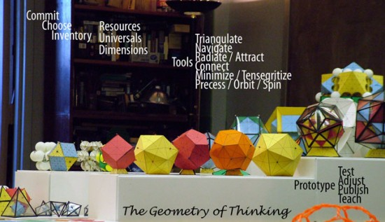

Sustainability Bucket List
Natural Leadership

Natural Leadership
Eco-careers

Innovation & Entrepreneurship

Biomimicry

Green Graphic & Packaging Design

Innovation & Entrepreneurship

About the MA Program

About the MA Program

Natural Leadership
Innovation & Entrepreneurship